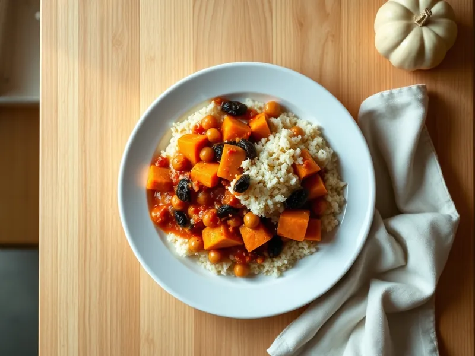

Фото: Иллюстрация ИИ, Cloudflare Workers AI
Тушёная тыква с нутом по-мароккански
Тыква и нут в томатном соусе с зирой, корицей и изюмом
30 мин3 порц.295 ккал на порциюБ 10 · Ж 13 · У 37Средиземноморская кухня
Открыть в приложении: порции, таймеры, список покупок
Продукты на 3 порц.
- Тыква500 г
- Нут1 банка
- Томаты в собственном соку1 шт
- Лук репчатый1 шт
- Чеснок2 зуб.
- Зира1 ч. л.
- Корица0,5 ч. л.
- Изюм по желанию2 ст. л.
- Оливковое масло2 ст. л.
- Вода150 мл
- Соль1 ч. л.
Как готовить
- Очистите тыкву и нарежьте кубиками 2 см, лук мелко, чеснок пластинками. Слейте жидкость с нута. На это уйдёт 7 минут.
- Обжарьте лук в масле в сотейнике на среднем огне 4 минуты, добавьте чеснок, зиру и корицу и жарьте 30 секунд.
- Положите тыкву, перемешайте с маслом и специями и жарьте 2 минуты.
- Добавьте томаты, нут, изюм, 150 мл воды и соль. Доведите до кипения, накройте крышкой и тушите на слабом огне 15 минут, пока тыква не станет мягкой и нож не будет входить легко.
- Подавайте с кускусом или лепёшкой.
Совет. Не мешайте тыкву часто во время тушения, иначе кубики развалятся в пюре.